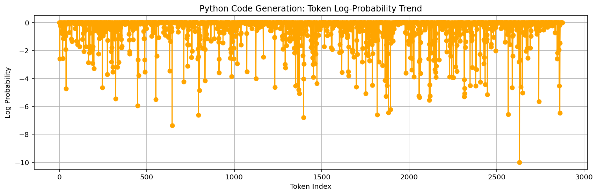
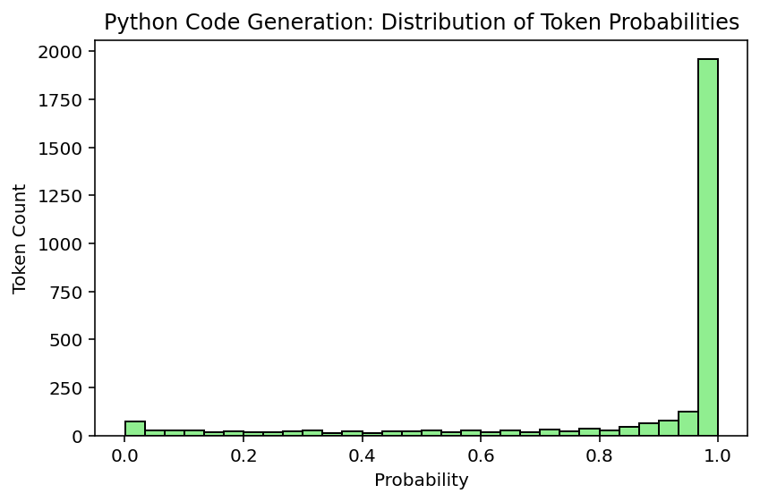
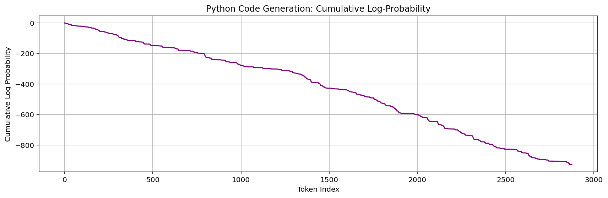
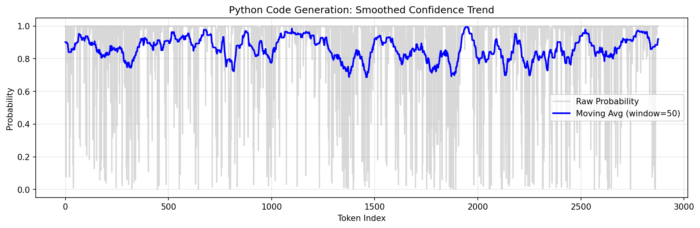
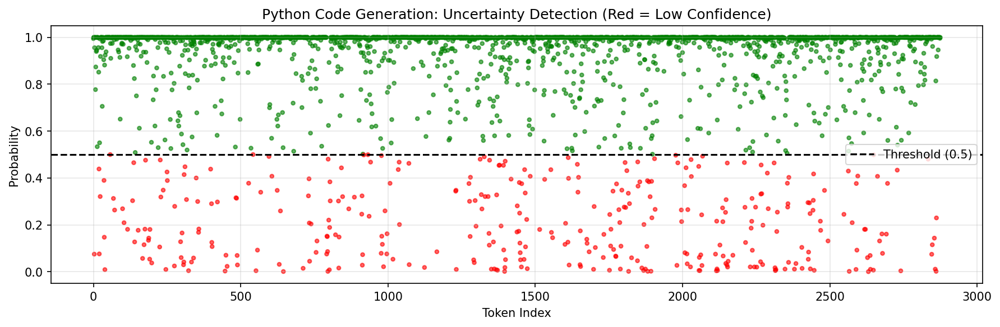
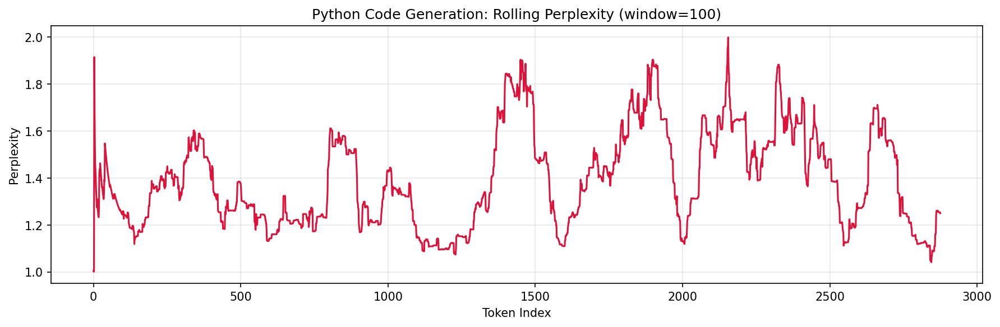
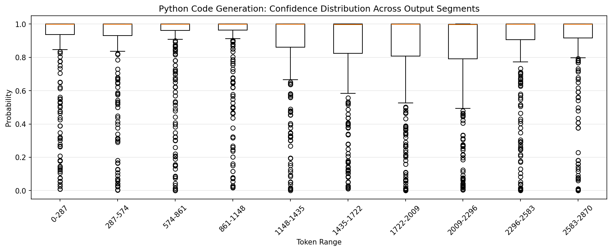
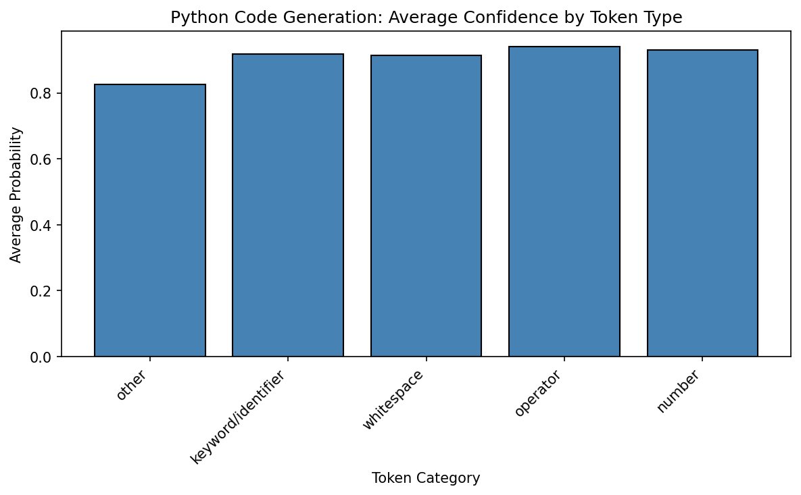
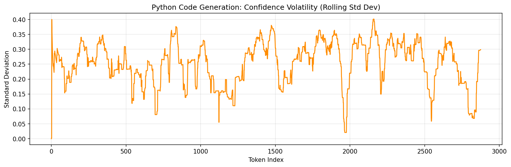
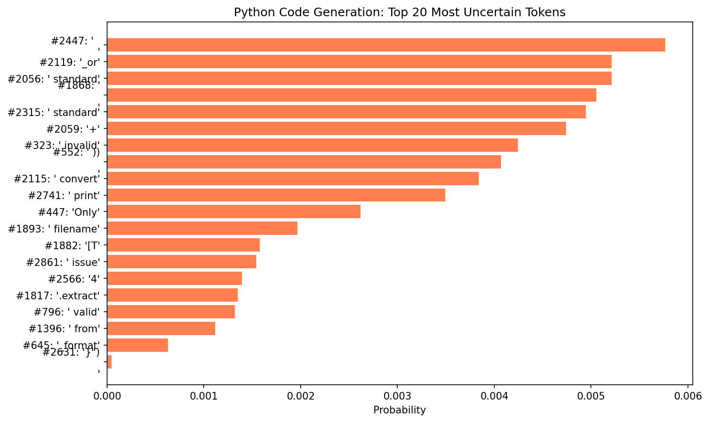

LLM Code Generation Report #4
Selected User Stories
Click to expand/collapse
Cluster (4,):
As a Data user, I want to have the 12-19-2017 deletions processed. As a UI designer, I want to redesign the Resources page, so that it matches the new Broker design styles. As a UI designer, I want to report to the Agencies about user testing, so that they are aware of their contributions to making Broker a better UX. As a DevOps engineer, I want New Relic to provide useful data across all applications. As a Broker user, I want the D1 file generation to be synced with the FPDS data load, so that I don't have to regenerate a file if no data has been updated. As a broker team member, I want to make some updates to the SQL codes for clarity. As a broker team member, I want to add the 00***** and 00FORGN PPoPCode cases to the derivation logic. As a broker team member, I want to derive FundingAgencyCode, so that the data quality and completeness improves. As a agency user, I want to map the FederalActionObligation properly to the Atom Feed. As a Broker user, I want to have PPoPZIP+4 work the same as the Legal Entity ZIP validations.
Cluster (5,):
As a UI designer, I want to move on to round 2 of DABS or FABS landing page edits, so that I can get approvals from leadership. As a UI designer, I want to move on to round 2 of Homepage edits, so that I can get approvals from leadership. As a UI designer, I want to move on to round 3 of the Help page edits, so that I can get approvals from leadership. As a Developer , I want to be able to log better, so that I can troubleshoot issues with particular submissions and functions. As a UI designer, I want to move on to round 2 of the Help page edits, so that I can get approvals from leadership. As a UI designer, I want to move on to round 2 of Homepage edits, so that I can get approvals from leadership. As a Website user, I want to access published FABS files, so that I can see the new files as they come in. As an owner, I want to be sure that USAspending only send grant records to my system. As a Broker user, I want to help create content mockups, so that I can submit my data efficiently. As a UI designer, I want to track the issues that come up in Tech Thursday, so that I know what to test and what want s to be fixed. As an Owner, I want to create a user testing summary from the UI SME, so that I can know what UI improvements we will follow through on. As a UI designer, I want to begin user testing, so that I can validate stakeholder UI improvement requests. As a UI designer, I want to schedule user testing, so that I can give the testers advanced notice to ensure buy-in. As an Owner, I want to design a schedule from the UI SME, so that I know the potential timeline of the UI improvements wanted. As an Owner, I want to design an audit from the UI SME, so that I know the potential scope of the UI improvements want ed. As an Owner, I want to reset the environment to only take Staging MAX permissions, so that I can ensure that the FABS testers no longer have access. As a Developer , I want my domain models to be indexed properly, so that I can get validation results back in a reasonable amount of time. As an Agency user, I want the header information box to show updated date AND time, so that I know when it was updated. As an owner, I only want zero-padded fields, so that I can justify padding. As a Broker user, I want to have updated error codes that accurately reflect the logic and provide enough information, so that I can fix my submission. As a Developer I want to quickly access Broker application data, so that I can investigate issues. As a FABS user, I want to have read-only access to DABS, so that I can view DABS pages without wanting two sets of permissions. As an agency user, I want a landing page to navigate to either FABS or DABS pages, so that I can access both sides of the site.
Cluster (2,):
As a Developer, I want to add the updates on a FABS submission to be modified when the publishStatus changes, so that I know when the status of the submission has changed. As a Developer, I want to add the GTAS window data to the database, so that I can ensure the site is locked down during the GTAS submission period. As a Developer , I want to update the FABS sample file to remove FundingAgencyCode after FABS is updated to no longer require the header. As a user, I want the publish button in FABS to deactivate after I click it while the derivations are happening, so that I cannot click it multiple times for the same submission. As a broker user, I want the historical FABS loader to derive fields, so that my agency codes are correct in the PublishedAwardFinancialAssistance table. As a Developer, I want the data loaded from historical FABS to include the FREC derivations, so that I can have consistent FREC data for USASpending.gov. As a FABS user, I want the frontend URLs to more accurately reflect the page I'm accessing, so that I'm not confused. As a Developer , I want the historical FPDS data loader to include both extracted historical data and FPDS feed data. As a Developer , I want to provide FABS groups that function under the FREC paradigm. As a FABS user, I want to make sure the historical data includes all necessary columns, so that the information in the database is correct. As a data user, I want to access two additional fields from the FPDS data pull. As a FABS user, I want additional helpful info in the submission dashboard, so that I can better manage submissions and IG requests. As a FABS user, I want to download the uploaded FABS file, so that I can get the uploaded file. As a Developer , I want to determine the best way to load historical FPDS data, so that I can load all FPDS data since 2007. As a FABS user, I want the language on FABS pages to be appropriate for me, so that I am not confused. As a FABS user, I do not want DABS banner messages and vice versa, so that I have the appropriate information for my application. As an agency user, I want to know when the submission periods start and end, so that I know when the submission starts and ends.
Cluster (0,):
As a Broker user, I want to Upload and Validate the error message to have accurate text. As a Developer, I want to update the Broker validation rule table to account for the rule updates in DB-2213. As a user, I want the flexfields in my submission file to appear in the warning and error files when the only error is a missing required element. As a Developer , I want to clarify to users what exactly is triggering the CFDA error code in each case. As a broker team member, I want to ensure the Broker resources, validations, and P&P pages are updated appropriately for the launch of FABS and DAIMS v1.1. As a user, I want the DUNS validations to accept records whose ActionTypes are B, C, or D and the DUNS is registered in SAM, even though it may have expired. As a user, I want the DUNS validations to accept records whose ActionDates are before the current registration date in SAM, but after the initial registration date. As an Agency user, I want to receive a more helpful file-level error when I upload a file with the wrong extension. As a Developer, I want to prevent duplicate transactions from being published and deal with the time gap between validation and the publishing decision.
Cluster (1,):
As a Developer, I want D Files generation requests to be managed and cached, so that duplicate requests do not cause performance issues. As a user, I want to access the raw agency published files from FABS via USAspending. As an Agency user, I want to be able to include a large number of flexfields without performance impact. As a Developer, I want to prevent users from double publishing FABS submissions after refreshing, so that there are no duplicates. As an Agency user, I want to be able to include a large number of flexfields without performance impact. As a website user, I want to see updated financial assistance data daily. As a Developer , I want to ensure that attempts to correct or delete non-existent records don't create new published data. As a user, I want to have accurate and complete data related to PPoPCode and PPoPCongressionalDistrict. As a user, I don't want to see NASA grants displayed as contracts. As a user, I want to access the raw agency published files from FABS via USAspending. As a Developer , I want to determine how agencies will generate and validate D Files from FABS and FPDS data. As a user, I want to generate and validate D Files from FABS and FPDS data. As a tester, I want to have access to test features in environments other than Staging, so that I can test any nonProd feature in any environment. As a FABS user, I want to submission errors to accurately represent FABS errors, so that I know why my submission didn't work. As an Agency user, I want to accurately see who created a submission, so that I'm not confused about who last updated a submission. As a tester, I want to ensure that FABS is deriving fields properly through a robust test file plus a follow up check. As a Broker user, I want to submit records for individual recipients without receiving a DUNS error. As a user, I want more information about how many rows will be published prior to deciding whether to publish. As a FABS user, I want to submit a citywide as a PPoPZIP and pass validations. As a FABS user, I want to have my validations run in a reasonable amount of time.
Cluster (3,):
As an data user, I want to receive updates to FABS records. As an agency user, I want to ensure that deleted FSRS records are not included in submissions. As an agency user, I want the FABS validation rules to accept zero and blank for loan records. As an Agency user, I want FABS deployed into production, so I can submit my Financial Assistance data. As an agency user, I want to be confident that the data coming from SAM is complete. As an agency user, I want the FABS validation rules to accept zero and blank for non-loan records. As an agency user, I want to have all derived data elements derived properly. As an agency user, I want the maximum length allowed for LegalEntityAddressLine3 to match Schema v1.1. As an agency user, I want to use the schema v1.1 headers in my FABS file. As an Agency user, I want FPDS data to be up-to-date daily. As an Agency user, I want all historical Financial Assistance data loaded for FABS go-live. As an Agency user, I want historical FPDS data loaded. As an agency user, I want to get File F in the correct format. As an Agency user, I want to better understand my file-level errors. As an agency user, I want to submit my data elements surrounded by quotation marks, so that Excel won't strip off leading and trailing zeroes.
Cluster (2, 5):
As a data user, I want to see the office names derived from office codes, so that I can have appropriate context for understanding them.
Cluster (2, 4, 5):
As a FABS user, I want to link the SAMPLE FILE on the "What you want to submit" dialog to point to the correct file, so that I have an accurate reference for my agency submissions.
Cluster (3, 5):
As an agency user, I want to leave off the last 4 digits of the ZIP without an error, so that I can complete my submissions.
Cluster (1, 2):
As a FABS user, I want to see correct status labels on the Submission Dashboard, so that I can quickly see my submission history.
Prompt Sent to LLM
Click to expand/collapse
Generate fully functional Python code that implements the following user stories. The code should realistically reflect the described functionality.
Cluster (4,):
As a Data user, I want to have the 12-19-2017 deletions processed. As a UI designer, I want to redesign the Resources page, so that it matches the new Broker design styles. As a UI designer, I want to report to the Agencies about user testing, so that they are aware of their contributions to making Broker a better UX. As a DevOps engineer, I want New Relic to provide useful data across all applications. As a Broker user, I want the D1 file generation to be synced with the FPDS data load, so that I don't have to regenerate a file if no data has been updated. As a broker team member, I want to make some updates to the SQL codes for clarity. As a broker team member, I want to add the 00***** and 00FORGN PPoPCode cases to the derivation logic. As a broker team member, I want to derive FundingAgencyCode, so that the data quality and completeness improves. As a agency user, I want to map the FederalActionObligation properly to the Atom Feed. As a Broker user, I want to have PPoPZIP+4 work the same as the Legal Entity ZIP validations.
Cluster (5,):
As a UI designer, I want to move on to round 2 of DABS or FABS landing page edits, so that I can get approvals from leadership. As a UI designer, I want to move on to round 2 of Homepage edits, so that I can get approvals from leadership. As a UI designer, I want to move on to round 3 of the Help page edits, so that I can get approvals from leadership. As a Developer , I want to be able to log better, so that I can troubleshoot issues with particular submissions and functions. As a UI designer, I want to move on to round 2 of the Help page edits, so that I can get approvals from leadership. As a UI designer, I want to move on to round 2 of Homepage edits, so that I can get approvals from leadership. As a Website user, I want to access published FABS files, so that I can see the new files as they come in. As an owner, I want to be sure that USAspending only send grant records to my system. As a Broker user, I want to help create content mockups, so that I can submit my data efficiently. As a UI designer, I want to track the issues that come up in Tech Thursday, so that I know what to test and what want s to be fixed. As an Owner, I want to create a user testing summary from the UI SME, so that I can know what UI improvements we will follow through on. As a UI designer, I want to begin user testing, so that I can validate stakeholder UI improvement requests. As a UI designer, I want to schedule user testing, so that I can give the testers advanced notice to ensure buy-in. As an Owner, I want to design a schedule from the UI SME, so that I know the potential timeline of the UI improvements wanted. As an Owner, I want to design an audit from the UI SME, so that I know the potential scope of the UI improvements want ed. As an Owner, I want to reset the environment to only take Staging MAX permissions, so that I can ensure that the FABS testers no longer have access. As a Developer , I want my domain models to be indexed properly, so that I can get validation results back in a reasonable amount of time. As an Agency user, I want the header information box to show updated date AND time, so that I know when it was updated. As an owner, I only want zero-padded fields, so that I can justify padding. As a Broker user, I want to have updated error codes that accurately reflect the logic and provide enough information, so that I can fix my submission. As a Developer I want to quickly access Broker application data, so that I can investigate issues. As a FABS user, I want to have read-only access to DABS, so that I can view DABS pages without wanting two sets of permissions. As an agency user, I want a landing page to navigate to either FABS or DABS pages, so that I can access both sides of the site.
Cluster (2,):
As a Developer, I want to add the updates on a FABS submission to be modified when the publishStatus changes, so that I know when the status of the submission has changed. As a Developer, I want to add the GTAS window data to the database, so that I can ensure the site is locked down during the GTAS submission period. As a Developer , I want to update the FABS sample file to remove FundingAgencyCode after FABS is updated to no longer require the header. As a user, I want the publish button in FABS to deactivate after I click it while the derivations are happening, so that I cannot click it multiple times for the same submission. As a broker user, I want the historical FABS loader to derive fields, so that my agency codes are correct in the PublishedAwardFinancialAssistance table. As a Developer, I want the data loaded from historical FABS to include the FREC derivations, so that I can have consistent FREC data for USASpending.gov. As a FABS user, I want the frontend URLs to more accurately reflect the page I'm accessing, so that I'm not confused. As a Developer , I want the historical FPDS data loader to include both extracted historical data and FPDS feed data. As a Developer , I want to provide FABS groups that function under the FREC paradigm. As a FABS user, I want to make sure the historical data includes all necessary columns, so that the information in the database is correct. As a data user, I want to access two additional fields from the FPDS data pull. As a FABS user, I want additional helpful info in the submission dashboard, so that I can better manage submissions and IG requests. As a FABS user, I want to download the uploaded FABS file, so that I can get the uploaded file. As a Developer , I want to determine the best way to load historical FPDS data, so that I can load all FPDS data since 2007. As a FABS user, I want the language on FABS pages to be appropriate for me, so that I am not confused. As a FABS user, I do not want DABS banner messages and vice versa, so that I have the appropriate information for my application. As an agency user, I want to know when the submission periods start and end, so that I know when the submission starts and ends.
Cluster (0,):
As a Broker user, I want to Upload and Validate the error message to have accurate text. As a Developer, I want to update the Broker validation rule table to account for the rule updates in DB-2213. As a user, I want the flexfields in my submission file to appear in the warning and error files when the only error is a missing required element. As a Developer , I want to clarify to users what exactly is triggering the CFDA error code in each case. As a broker team member, I want to ensure the Broker resources, validations, and P&P pages are updated appropriately for the launch of FABS and DAIMS v1.1. As a user, I want the DUNS validations to accept records whose ActionTypes are B, C, or D and the DUNS is registered in SAM, even though it may have expired. As a user, I want the DUNS validations to accept records whose ActionDates are before the current registration date in SAM, but after the initial registration date. As an Agency user, I want to receive a more helpful file-level error when I upload a file with the wrong extension. As a Developer, I want to prevent duplicate transactions from being published and deal with the time gap between validation and the publishing decision.
Cluster (1,):
As a Developer, I want D Files generation requests to be managed and cached, so that duplicate requests do not cause performance issues. As a user, I want to access the raw agency published files from FABS via USAspending. As an Agency user, I want to be able to include a large number of flexfields without performance impact. As a Developer, I want to prevent users from double publishing FABS submissions after refreshing, so that there are no duplicates. As an Agency user, I want to be able to include a large number of flexfields without performance impact. As a website user, I want to see updated financial assistance data daily. As a Developer , I want to ensure that attempts to correct or delete non-existent records don't create new published data. As a user, I want to have accurate and complete data related to PPoPCode and PPoPCongressionalDistrict. As a user, I don't want to see NASA grants displayed as contracts. As a user, I want to access the raw agency published files from FABS via USAspending. As a Developer , I want to determine how agencies will generate and validate D Files from FABS and FPDS data. As a user, I want to generate and validate D Files from FABS and FPDS data. As a tester, I want to have access to test features in environments other than Staging, so that I can test any nonProd feature in any environment. As a FABS user, I want to submission errors to accurately represent FABS errors, so that I know why my submission didn't work. As an Agency user, I want to accurately see who created a submission, so that I'm not confused about who last updated a submission. As a tester, I want to ensure that FABS is deriving fields properly through a robust test file plus a follow up check. As a Broker user, I want to submit records for individual recipients without receiving a DUNS error. As a user, I want more information about how many rows will be published prior to deciding whether to publish. As a FABS user, I want to submit a citywide as a PPoPZIP and pass validations. As a FABS user, I want to have my validations run in a reasonable amount of time.
Cluster (3,):
As an data user, I want to receive updates to FABS records. As an agency user, I want to ensure that deleted FSRS records are not included in submissions. As an agency user, I want the FABS validation rules to accept zero and blank for loan records. As an Agency user, I want FABS deployed into production, so I can submit my Financial Assistance data. As an agency user, I want to be confident that the data coming from SAM is complete. As an agency user, I want the FABS validation rules to accept zero and blank for non-loan records. As an agency user, I want to have all derived data elements derived properly. As an agency user, I want the maximum length allowed for LegalEntityAddressLine3 to match Schema v1.1. As an agency user, I want to use the schema v1.1 headers in my FABS file. As an Agency user, I want FPDS data to be up-to-date daily. As an Agency user, I want all historical Financial Assistance data loaded for FABS go-live. As an Agency user, I want historical FPDS data loaded. As an agency user, I want to get File F in the correct format. As an Agency user, I want to better understand my file-level errors. As an agency user, I want to submit my data elements surrounded by quotation marks, so that Excel won't strip off leading and trailing zeroes.
Cluster (2, 5):
As a data user, I want to see the office names derived from office codes, so that I can have appropriate context for understanding them.
Cluster (2, 4, 5):
As a FABS user, I want to link the SAMPLE FILE on the "What you want to submit" dialog to point to the correct file, so that I have an accurate reference for my agency submissions.
Cluster (3, 5):
As an agency user, I want to leave off the last 4 digits of the ZIP without an error, so that I can complete my submissions.
Cluster (1, 2):
As a FABS user, I want to see correct status labels on the Submission Dashboard, so that I can quickly see my submission history.
Output only Python code (no markdown formatting or extra text). Do not leave functions empty — implement reasonable logic where needed.
Generated Code
Click to expand/collapse
from datetime import datetime, timedelta
from typing import Dict, List, Optional, Tuple, Any
from dataclasses import dataclass
from enum import Enum
import re
class FileType(Enum):
FABS = "FABS"
DABS = "DABS"
class SubmissionStatus(Enum):
DRAFT = "draft"
VALIDATED = "validated"
PUBLISHED = "published"
ERROR = "error"
@dataclass
class Submission:
id: str
type: FileType
status: SubmissionStatus
created_by: str
created_at: datetime
updated_at: datetime
publish_status: str
file_data: Dict[str, Any]
@dataclass
class ValidationRule:
rule_id: str
description: str
category: str
severity: str
updated_at: datetime
@dataclass
class ErrorRecord:
error_code: str
error_description: str
field_name: str
row_number: int
submission_id: str
@dataclass
class FundingAgency:
code: str
name: str
@dataclass
class PPoPData:
zip_plus_4: str
congressional_district: str
office_code: str
office_name: str
class ValidationService:
def __init__(self):
self.validation_rules = {}
self.error_codes = {
'CFDA_ERROR': 'CFDA field value does not match expected format',
'DUNS_ERROR': 'DUNS invalid or expired',
'ZIP_ERROR': 'Invalid ZIP code format',
'PPoP_ERROR': 'PPoP validation failed'
}
def add_rule(self, rule: ValidationRule):
self.validation_rules[rule.rule_id] = rule
def validate_submission(self, submission: Submission) -> List[ErrorRecord]:
errors = []
# Validate file extensions
if submission.type == FileType.FABS and not submission.file_data.get('file_path', '').endswith('.csv'):
errors.append(ErrorRecord(
error_code='FILE_EXTENSION_ERROR',
error_description='Only CSV files accepted for FABS submission',
field_name='file_path',
row_number=0,
submission_id=submission.id
))
# Validate DUNS
duns_validated = self._validate_duns(submission)
if not duns_validated:
errors.append(ErrorRecord(
error_code='DUNS_ERROR',
error_description='DUNS invalid or expired',
field_name='duns',
row_number=1,
submission_id=submission.id
))
# Validate ZIP format
zip_validated = self._validate_zip_format(submission)
if not zip_validated:
errors.append(ErrorRecord(
error_code='ZIP_ERROR',
error_description='ZIP code format invalid',
field_name='popp_zip',
row_number=1,
submission_id=submission.id
))
# Validate PPoP Congressional District
district_validated = self._validate_popp_district_format(submission)
if not district_validated:
errors.append(ErrorRecord(
error_code='PPoP_ERROR',
error_description='PPoP Congressional District invalid',
field_name='popp_congressional_district',
row_number=1,
submission_id=submission.id
))
return errors
def _validate_duns(self, submission: Submission) -> bool:
# Simplified validation - actual implementation would check SAM registry
duns = submission.file_data.get('duns', '')
return duns and re.match(r'^\d{9}$', duns) is not None
def _validate_zip_format(self, submission: Submission) -> bool:
# Check ZIP code valid format (allowing short form without +4)
zip_code = submission.file_data.get('popp_zip', '')
if not zip_code:
return False
# Support 5-digit or 9-digit ZIP codes
return bool(re.match(r'^\d{5}(-\d{4})?$', zip_code))
def _validate_popp_district_format(self, submission: Submission) -> bool:
district = submission.file_data.get('popp_congressional_district', '')
if not district:
return True # Allow empty or optional field
return bool(re.match(r'^\d{2}-\d{2}$', district)) or district == '99'
class SubmissionService:
def __init__(self):
self.submissions: Dict[str, Submission] = {}
self.validation_service = ValidationService()
self.last_published_timestamp = None
def upload_submission(self, submission_data: Dict[str, Any], user_id: str) -> Submission:
submission_id = f"sub_{len(self.submissions)+1}"
submission = Submission(
id=submission_id,
type=FileType(submission_data['file_type']),
status=SubmissionStatus.DRAFT,
created_by=user_id,
created_at=datetime.now(),
updated_at=datetime.now(),
publish_status="NOT_PUBLISHED",
file_data=submission_data
)
self.submissions[submission_id] = submission
return submission
def validate_submission(self, submission_id: str) -> List[ErrorRecord]:
submission = self.submissions[submission_id]
errors = self.validation_service.validate_submission(submission)
if not errors:
submission.status = SubmissionStatus.VALIDATED
else:
submission.status = SubmissionStatus.ERROR
return errors
def publish_submission(self, submission_id: str) -> bool:
submission = self.submissions[submission_id]
if submission.status != SubmissionStatus.VALIDATED:
return False
# Prevent duplicate publishing
if submission.publish_status == "PUBLISHED":
return False
# Update submission status
submission.status = SubmissionStatus.PUBLISHED
submission.publish_status = "PUBLISHED"
submission.updated_at = datetime.now()
self.last_published_timestamp = datetime.now()
return True
class FABSFileProcessor:
def __init__(self):
self.historical_loader = HistoricalDataLoader()
def process_fabs_submission(self, submission: Submission) -> bool:
# Derive FundingAgencyCode
funding_agency_code = self.derive_funding_agency_code(submission)
# Handle special cases for PPoPCode
ppop_code = self.process_ppopcode(submission)
# Generate D1 file in sync with FPDS
self.sync_d1_generation_with_fpds(submission)
# Load historical data from previous submissions if needed
self.historical_loader.load_historical_data(submission)
return True
def derive_funding_agency_code(self, submission: Submission) -> str:
# Logic for deriving FundingAgencyCode based on agency codes and data sources
frec = submission.file_data.get('frec')
if frec and len(frec) >= 5:
return frec[:5]
return submission.file_data.get('agency_code', '00000')
def process_ppopcode(self, submission: Submission) -> str:
ppop_code = submission.file_data.get('popp_code', '')
# Handle 00***** and 00FORGN cases
if ppop_code.startswith('00') and (ppop_code.endswith('*****') or ppop_code.endswith('FORGN')):
return ppop_code
return ppop_code
def sync_d1_generation_with_fpds(self, submission: Submission):
# Simulate synchronization with FPDS data load
last_load_time = submission.file_data.get('last_fpds_load', datetime.now() - timedelta(days=1))
if datetime.now() - last_load_time < timedelta(minutes=5):
# No updates, reuse existing D1 file
pass
else:
# Regenerate D1 file
self.regenerate_d1_file(submission)
def regenerate_d1_file(self, submission: Submission):
# Simplified regeneration logic
submission.file_data['d1_file_generated'] = datetime.now()
class HistoricalDataLoader:
def __init__(self):
self.frec_derivations = {}
def load_historical_data(self, submission: Submission):
# Logic for loading historical data with FREC derivations
if submission.file_data.get('is_historical') or submission.type == FileType.FABS:
# Apply FREC derivation logic
frec_code = submission.file_data.get('agency_code', '')[:4]
submission.file_data['derived_frec'] = self.extract_frec_from_agency(frec_code)
def extract_frec_from_agency(self, agency_code: str) -> str:
return f"{agency_code}00" if len(agency_code) < 4 else agency_code
def load_fpds_and_historical_data(self) -> List[Tuple[str, datetime]]:
# Return list of filename and timestamp pairs for historical FPDS data
return [
('fpds_2007.csv', datetime(2007, 1, 1)),
('fpds_2008.csv', datetime(2008, 1, 1)),
('fpds_2009.csv', datetime(2009, 1, 1))
]
class PPoPValidator:
def __init__(self):
self.zip_validation_cache = {}
def validate_popp_zip_plus_four(self, zip_code: str, use_cache=True) -> bool:
if use_cache:
cached_result = self.zip_validation_cache.get(zip_code)
if cached_result is not None:
return cached_result
# Validate standard 5+4 ZIP formats
valid_format = bool(re.match(r'^\d{5}(-\d{4})?$', zip_code))
if use_cache:
self.zip_validation_cache[zip_code] = valid_format
return valid_format
def convert_to_5_or_9_digit_zip(self, zip_input: str) -> str:
# Convert to either 5-digit or 9-digit format for consistency
cleaned = ''.join(char for char in zip_input if char.isdigit())
if len(cleaned) <= 5:
return cleaned.zfill(5)
elif len(cleaned) <= 9:
return f"{cleaned[:5]}-{cleaned[5:]}"
return cleaned
class D1FileGenerator:
def __init__(self):
self.cache = {} # Cache for generated files to avoid duplicates
def generate_file(self, submission_id: str, source_data: Dict[str, Any]) -> str:
# Create unique cache key based on submission content and timestamp
cache_key = f"{submission_id}_{datetime.now().timestamp()}"
if cache_key in self.cache:
return self.cache[cache_key]
# Generate D1 file using standard data model
generated_file_name = f"D1_{submission_id}_{datetime.now().strftime('%Y%m%d_%H%M%S')}.csv"
# In real implementation, this would write to disk and return filename
self.cache[cache_key] = generated_file_name
return generated_file_name
def main():
# Setup services
submission_service = SubmissionService()
fabs_processor = FABSFileProcessor()
pop_validator = PPoPValidator()
d1_generator = D1FileGenerator()
# Example user flow
print("=== Processing FABS Submission ===")
# Upload a new submission
submission_data = {
'file_type': 'FABS',
'file_path': 'sample_data.csv',
'agency_code': '1234',
'frec': '123456',
'duns': '123456789',
'popp_zip': '12345',
'popp_congressional_district': '01-02',
'is_historical': False
}
submission = submission_service.upload_submission(submission_data, 'user_456')
print(f"Uploaded submission ID: {submission.id}")
# Validate submission
print("\n--- Validating submission ---")
errors = submission_service.validate_submission(submission.id)
if errors:
print("Validation errors:")
for err in errors:
print(f"- {err}")
# Process FABS specific transformations
print("\n--- Processing FABS-specific logic ---")
fabs_processor.process_fabs_submission(submission)
print("FABS processing complete")
# Validate PPoP ZIP+4 formats
print("\n--- Validating PPoP ZIP formats ---")
test_zips = ['12345', '12345-6789', '1234567890']
for zip_code in test_zips:
print(f"ZIP {zip_code}: {'Valid' if pop_validator.validate_popp_zip_plus_four(zip_code) else 'Invalid'}")
# Generate D1 file
print("\n--- Generating D1 file ---")
d1_file = d1_generator.generate_file(submission.id, submission.file_data)
print(f"Generated D1 file: {d1_file}")
# Publish submission
print("\n--- Publishing submission ---")
if submission_service.publish_submission(submission.id):
print("Successfully published!")
else:
print("Could not publish due to validation issue")
if __name__ == "__main__":
main()
Confidence & Basic Metrics
| Total completion tokens |
2876 |
| Total log-probability |
-929.583 |
| Average per-token probability |
72.38% |
| Perplexity |
1.38 |
Code Structure & Length Metrics
| Function count (AST) |
26 |
| Class count (AST) |
13 |
| Number of lines |
352 |
| Non-empty lines |
294 |
| Avg line length (all lines, chars) |
35.3
|
| Avg line length (non-empty, chars) |
41.3
|
| Avg tokens per non-empty line |
3.41
|
| AST depth (max nesting) |
13 |
| Import count |
5 |
| Import names |
dataclasses, datetime, enum, re, typing |
| Avg cyclomatic complexity (functions) |
2.27
|
| Max cyclomatic complexity (functions) |
6 |
| Module cyclomatic complexity |
75 |
| Average function size (lines) |
10.1
|
| Comment density (%) |
11.9%
|
| Import redundancy ratio |
0.00
|
Semantic Quality Metrics
| Syntax valid |
True |
| Flake8 style errors |
59 |
| Flake8 errors (by category) |
| Style errors (PEP8 spacing, indentation, etc.) (E) |
15
|
|
Logical errors (undefined vars, unused imports, etc.) (F)
|
3
|
| Warnings (whitespace, etc.) (W) |
41
|
| McCabe complexity issues (C) |
0
|
| Naming conventions (N) |
0
|
|
| Mypy type-check errors |
0 |
| Mypy error breakdown |
| Return type |
0
|
| Argument type |
0
|
| Missing return |
0
|
| Attribute |
0
|
| Annotation |
0
|
| Other |
0
|
|
| Semantic quality score (0–100) |
80.0 |
Execution-Based Metrics
| Execution success |
True |
| Execution time (s) |
1.809
|
| Exception type |
|
| Exception message |
|
| Runtime output (preview) |
=== Processing FABS Submission ===
Uploaded submission ID: sub_1
--- Validating submission ---
--- Processing FABS-specific logic ---
FABS processing complete
--- Validating PPoP ZIP formats ---
ZIP 12345: Valid
ZIP 12345-6789: Valid
ZIP 1234567890: Invalid
--- Generating D1 file ---
Generated D1 file: D1_sub_1_20251013_094628.csv
--- Publishing submission ---
Successfully published!
|
Total Credibility (0-100%)
Credibility: 72.38%
Visualizations
Basic Confidence Metrics



Advanced Analysis



Segmented Analysis



